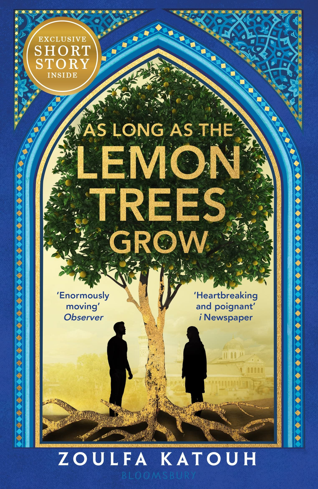
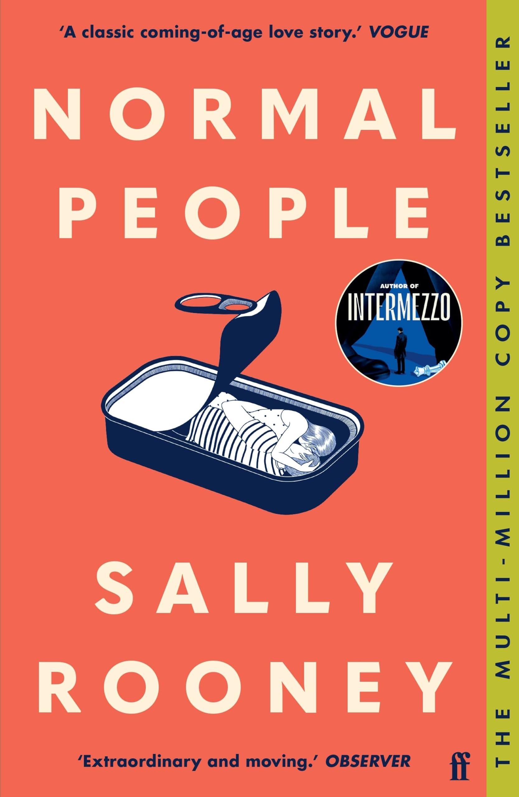
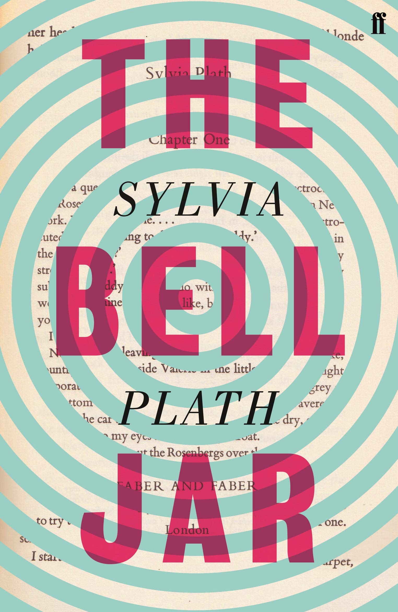

White Nights
"White Nights" is told in the first person by a nameless narrator. The narrator is a young man living in Saint Petersburg who suffers from loneliness.

As Long As Lemon Trees Grow
An epic, emotional, breathtaking story of love and loss set amid the Syrian revolution.

Normal People
Connell and Marianne grew up in the same small town, but the similarities end there. At school, Connell is popular and well liked, while Marianne is a loner.

The Jar Bar
chronicles a young woman's mental breakdown and eventual recovery, while also exploring societal expectations of women in the 1950s.